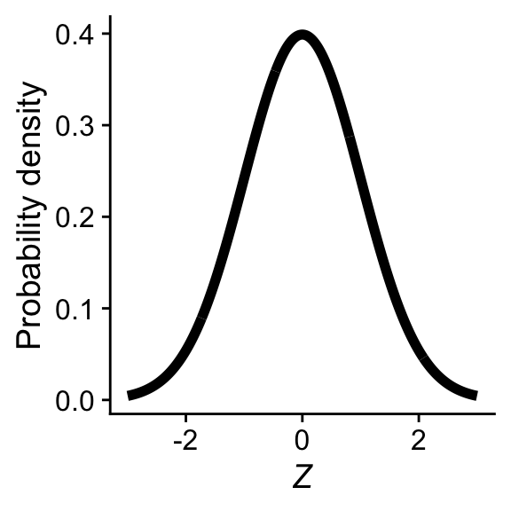
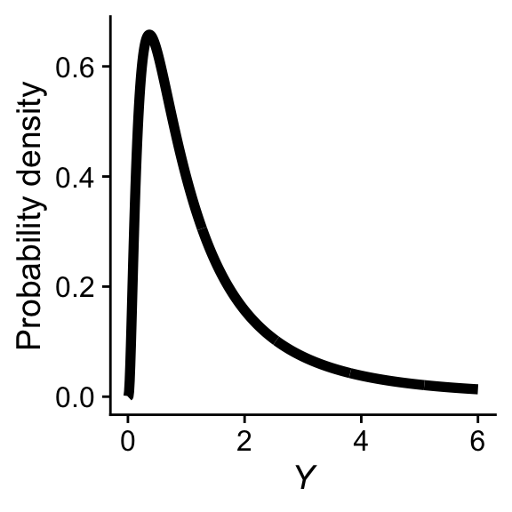
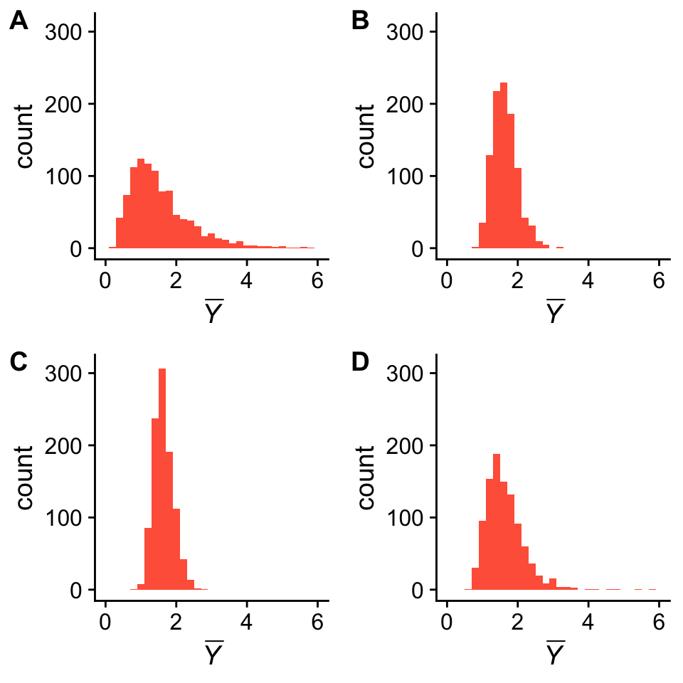
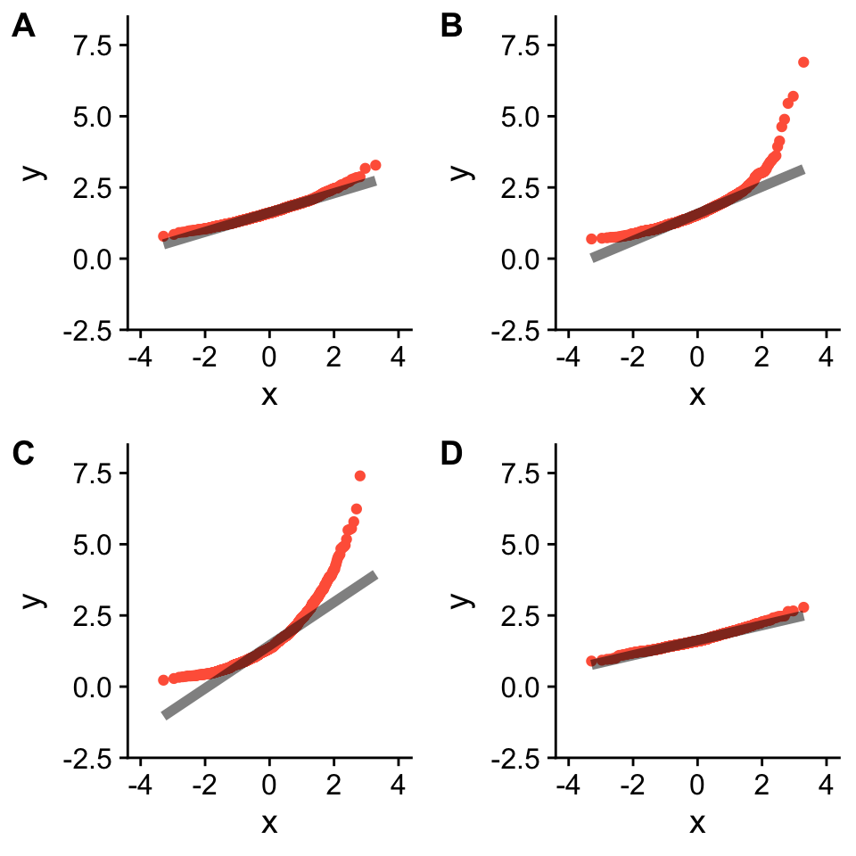
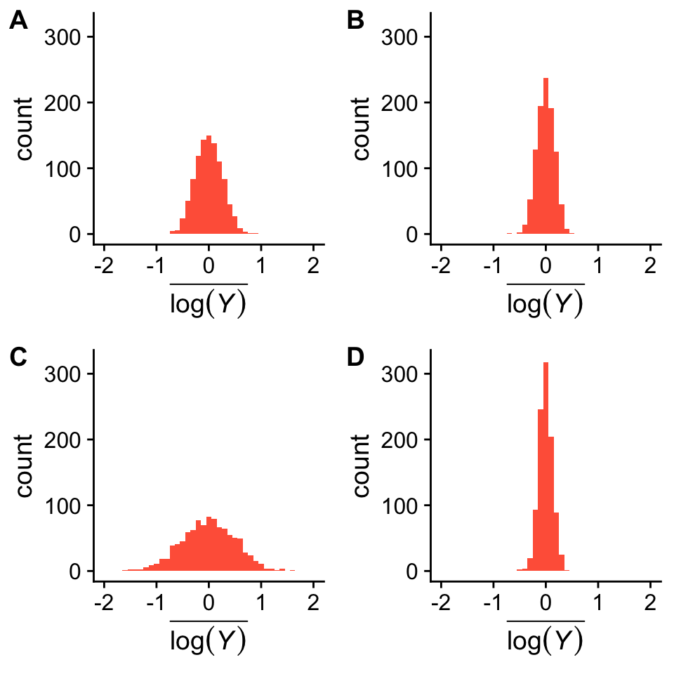
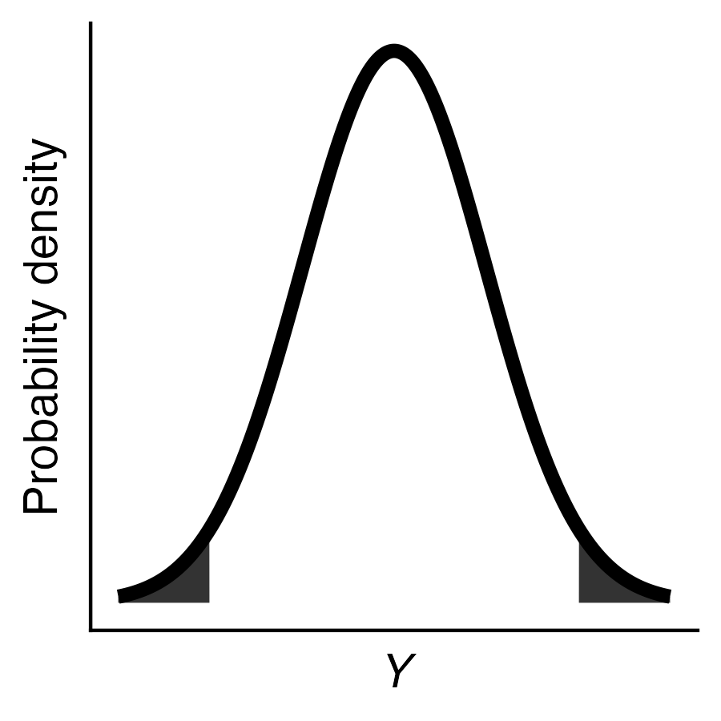

10 Introducing the normal distribution
Due Thursday, April 4, 2024 before lecture
Submit your answers via Google Classroom
Which of the following is not a property of the normal distribution? [1 point]
- It has a single mode
- Symmetrical around its mean
- Discrete distribution
- The probability density is highest exactly at the mean
If \(\sigma = 0.5\) and \(\mu = 2\), what is the standard error of the sample mean for \(n = 25\)? [1 point]
- 0.02
- 0.04
- 0.1
- 0.2
- 0.4
Consider a normal distribution with the mean and standard deviation described in question 2 above. If \(Y_i = 3\), how many standard deviations above the mean is that value? [1 point]
- 1
- 2
- 3
- 6
Consider the standard normal distribution shown below. Which of the following statements is correct about a value drawn from this distribution at random? [1 point]
a. There is an approximately 95% chance the value is between 0 and 2.
b. The value will be greater than 0
c. There is a 40% chance the value will be 0
d. There is more probability above the mean than below- Consider a continuous value \(Y\) with a population probability distribution shown below:

The four figures below (A.-D.) display the distribution of sample means, \(\overline{Y}\), from 1000 hypothetical, repeated studies, each with sample sizes of \(n = 4\), \(n = 16\), \(n = 36\), or \(n = 64\). Which figure is most likely associated with sample means where \(n = 64\)? [1 point]

- The figures below are the QQ plots associated with the distributions of \(\overline{Y}\) from question 5, but they are in random order. Which QQ-plot is associated with the histogram in panel A. from question 5? [1 point]

- The four figures below (A.-D.) are 1000 random sample means after log-transformation \(\overline{\text{log}(Y)}\). These are the same random samples in Question 5, but in a different order and with a log-transformation applied. As in question 5, the sample sizes are \(n = 4\), \(n = 16\), \(n = 36\), and \(n = 64\). Which figure is most likely associated with sample means of log-transformed values where \(n = 16\)? [1 point]

Which R function would be best suited to calculating the shaded areas under the normal curve in this figure? [1 point]

dnorm()pnorm()qnorm()rnorm()
Use the appropriate R functions to calculate the probability of observing a value less than -0.5 and the probability of observing a value less than 0.5 from a standard normal distribution (i.e. a normal distribution with mean = 0 and SD = 1). To answer this question, paste both the R code and the answer into the google form [1 point]
From a standard normal distribution, what is the probability of observing a value between -0.5 and 0.5? Hint: you will need to use the calculations from question 9 to answer this question. To answer this question, paste both the R code and the answer into the google form [1 point]